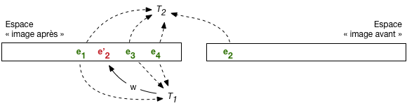
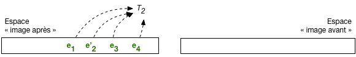
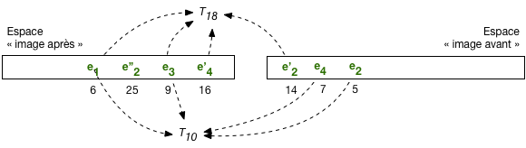
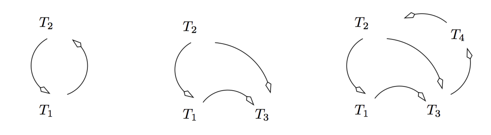
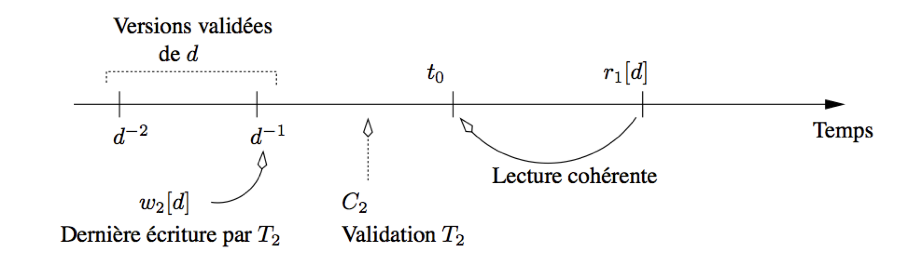
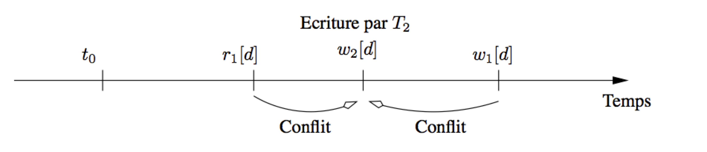

10. Contrôle de concurrence¶
Le contrôle de concurrence est l’ensemble des méthodes mises en œuvre par un serveur de bases de données pour assurer le bon comportement des transactions, et notamment leur isolation. Les autres propriétés désignées par l’acronyme ACID (soit la durabilité et l’atomicité) sont garanties par des techniques de reprise sur panne que nous étudierons ultérieurement.
Les SGBD utilisent essentiellement deux types d’approche pour gérer l’isolation. La première s’appuie sur un mécanisme de versionnement des mises à jour successives d’un nuplet. On parle de contrôle multiversion ou « d’isolation par cliché » (snapshot isolation en anglais). C’est une méthode satisfaisante jusqu’au niveau d’isolation repeatable read car elle impose peu de blocages et assure une bonne fluidité. En revanche elle ne suffit pas à garantir une isolation totale, de type serializable (sauf à recourir à des algorithmes sophistiqués qui ne semblent pas être encore adoptés dans les systèmes).
La seconde approche a recours au verrouillage, en lecture et en écriture, et garantit la sérialisabilité des exécutions concurrentes, grâce à un algorithme connu et utilisé depuis très longtemps, le verrouillage à deux phases (two-phases locking). Le verrouillage impacte négativement la fluidité des exécutions, certaines transactions devant être mises en attente. Il peut parfois même entraîner un rejet de certaines transactions. C’est le prix à payer pour éviter toute anomalie transactionnelle.
S1: isolation par versionnement¶
Supports complémentaires:
Nous avons déjà évoqué à plusieurs reprises le fait qu’un SGBD gère, à certains moments, plusieurs versions d’un même nuplet. C’est clairement le cas pendant le déroulement d’une transaction, pour garantir la possibilité d’effectuer des commit/rollback. Le versionnement est utilisé de manière plus générale pour garantir l’isolation, au moins jusqu’au niveau repeatable read. C’est ce qui est détaillé dans cette session.
Important
Dans le contexte d’une base relationnelle, le mot « donnée » dans ce qui suit désigne toujours un nuplet dans une table.
Versionnement et lectures « propres »¶
Comme vous avez dû le constater pendant la mise en pratique, par exemple avec notre interface en ligne,
il existe toujours deux choix possibles pour une transaction \(T\) en
cours : effectuer un commit pour valider définitivement
les opérations effectuées, ou un rollback pour les annuler.
Pour que ces choix soient toujours disponibles, le SGBD
doit maintenir, pendant l’exécution de T,
deux versions des données mises à jour :
Définition: image avant et image après
Le système maintient, pour tout nuplet en cours de modification par une transaction, deux versions de ce nuplet:
une version après la mise à jour, que nous appellerons l’image après de ce nuplet;
une version avant la mise à jour, que nous appellerons l’image avant de ce nuplet.
Ces deux images correspondent à deux versions successives du même nuplet, stockées dans deux espaces de stockage séparés (nous étudierons ces espaces de stockage dans le chapitre consacré à la reprise sur panne). Le versionnement est donc d’abord une conséquence de la nécessité de pouvoir effectuer des commit ou des rollback. Il s’avère également très utile pour gérer l’isolation des transactions, grâce à l’algorithme suivant.
Algorithme: lectures propres et cohérentes
Soit deux transactions \(T\) et \(T'\). Leur isolation, basée sur ces deux images, s’effectue de la manière suivante.
Chaque fois que T effectue la mise à jour d’un nuplet, la version courante est d’abord copiée dans l’image avant, puis remplacée par la valeur de l’image après fournie par T.
Quand T effectue la lecture de nuplets qu’elle vient de modifier, le système doit lire dans l’image après pour assurer une vision cohérente de la base, reflétant les opérations effectuées par T.
En revanche, quand c’est une autre transaction T” qui demande la lecture d’un nuplet en cours de modification par T, il faut lire dans l’image avant pour éviter les effets de lectures sales.
Cet algorithme est illustré par la Fig. 10.1. L’espace « après » et « avant » sont distingués (attention, il s’agit d’une représentation simplifiée d’espaces de stockage dont l’organisation est assez complexe: voir chapitre Reprise sur panne). Dans l’espace « après » on trouve les versions les plus récentes des nuplets de la base: ceux qui on fait l’objet d’un commit sont en vert, ceux qui sont en cours de modification sont en rouge.
L’image avant contient la version précédente de chaque nuplet en cours de modification. En l’occurrence, \(e'_2\) est en rouge dans l’image après car il représente une version du nuplet \(e_2\) en cours de modification par \(T_1\). La version précédente est en vert dans l’image avant.

Fig. 10.1 Lectures et écritures avec image après et image avant¶
Pour les lectures: \(T_1\) lira \(e'_2\) qu’elle est en train de modifier, dans l’image après, pour des raisons de cohérence, alors que \(T_2\) (ou n’importe quelle autre transaction) lira la version \(e_2\) dans l’image avant pour éviter une lecture sale.
Note
On peut se poser la question du nombre de paires image après/avant nécessaires. Que se passe-t-il
par exemple si \(T_2\) demande la mise à jour d’un nuplet déjà en cours de modification par \(T_1\) ?
Si cette mise à jour était autorisée, il faudrait créer une troisième version du nuplet, l’image avant de \(T_2\)
étant l’image après de \(T_1\) (tout le monde suit?). La multiplication des versions rendrait
la gestion des commit et rollback
extrêmement complexe, voire impossible: comment agir dans ce cas pour effectuer un rollback de la
transaction \(T_1\)? Il faudrait supprimer l’image après de \(T_1\), et donc l’image avant de \(T_2\),
Il n’est pas nécessaire d’aller plus loin pour réaliser que ce casse-tête est insoluble.
En pratique les systèmes n’autorisent pas les écritures sales, s’appuyant pour contrôler
cette règle sur des mécanismes de verrouillage exclusif qui
seront présentés dans ce qui suit.
Lectures répétables¶
Le mécanisme décrit ci-dessus est suffisant pour assurer un niveau d’isolation de type read committed. En effet, toute transaction autre que celle effectuant la modification d’un nuplet doit lire l’image avant, qui est nécessairement une version ayant fait l’objet d’un commit (pour les raisons exposées dans la note qui précède). En revanche, ce même mécanisme ne suffit pas pour le niveau repeatable read, comme le montre la Fig. 10.2.

Fig. 10.2 Lecture non répétable après validation par \(T_1\)¶
Cette figure montre la situation après que \(T_1\) a validé. La version \(e'_2\) fait maintenant partie des nuplets ayant fait l’objet d’un commit et \(T_2\) lit cette version, qui est donc différente de celle à laquelle elle pouvait accéder avant le commit de \(T_1\). La lecture est « non répétable », ce qui constitue un défaut d’isolation puisque \(T_2\) constate, en cours d’exécution, l’effet des mises à jour d’une transaction concurrente.
Les lectures non répétables sont dues au fait qu’une transaction \(T_2\) lit un nuplet e qui a été modifié par une transaction \(T_1\) après le début de \(T_2\). Or, quand \(T_1\) modifie e, il existe avant la validation deux versions de e : l’image avant et l’image après. Il suffirait que \(T_2\) continue à lire l’image avant, même après que \(T_1\) a validé, pour que le problème soit résolu. En d’autres termes, ces images avant peuvent être vues, au-delà de leur rôle dans le mécanisme des commit/rollback, comme un « cliché » de la base pris à un moment donné, et toute transaction ne lit que dans le cliché valide au moment où elle a débuté.
Un peu de réflexion suffit pour se convaincre qu’il n’est pas suffisant de conserver une seule version de l’image avant, mais qu’il faut conserver toutes celles qui existaient au moment où la transaction la plus ancienne a débuté. De nombreux SGBD (dont ORACLE, PostgreSQL, MySQL/InnoDB) proposent un mécanisme de lecture cohérente basé sur ce système de versionnement qui s’appuie sur l’algorithme suivant :
Algorithme: lectures répétables
chaque transaction \(T_i\) se voit attribuer, quand elle débute, une estampille temporelle \(\tau_i\) ; chaque valeur d’estampille est unique et les valeurs sont croissantes : on garantit ainsi un ordre total entre les transactions.
chaque version validée d’un nuplet e est de même estampillée par le moment \(\tau_e\) de sa validation ;
quand \(T_i\) doit lire un nuplet e, le système regarde dans l’image après. Si e a été modifié par \(T_i\) ou si son estampille est inférieure à \(\tau_i\), le nuplet peut être lu puisqu’il a été validé avant le début de \(T_i\), sinon le système recherche dans l’image avant la version de e validée et immédiatement antérieure à \(\tau_i\).
La seule extension nécessaire par rapport à l’algorithme
précédent est la non-destruction
des images avant, même quand la transaction qui
a modifié le nuplet valide par commit. L’image
avant contient alors toutes les versions successives
d’un nuplet, marquées par leur estampille temporelle. Seule
la plus récente de ces versions correspond à une mise
à jour en cours. Les autres ne servent qu’à assurer
la cohérence des lectures.
La Fig. 10.3 illustre le mécanisme de lecture cohérente et répétable. Les nuplets de l’image après sont associés à leur estampille temporelle: 6 pour \(e_1\), 25 pour \(e''_2\), etc. On trouve dans l’image avant les versions antérieures de ces nuplets: \(e'_2\) avec pour estampille 14, \(e_4\) avec pour estampille 7, \(e_2\), estampille 5.

Fig. 10.3 Lectures répétables avec image avant¶
La transaction \(T_{18}\) a débuté à l’instant 18. Elle lit, dans l’image après, les nuplets dont l’estampille est inférieure à 18: \(e_1\), \(e_3\), \(e'_4\). En revanche elle doit lire dans l’image avant la version de \(e_2\) dont l’estampille est inférieure à 18, soit \(e'_2\).
La transaction \(T_{10}\) a débuté à l’instant 10. Le même mécanisme s’applique. On constate que \(T_{10}\) doit remonter jusqu’à la version de \(e_{2}\) d’estampille 5 pour effectuer une lecture cohérente.
L’image avant contient l’historique de toutes les versions successives d’un enregistrement, marquées par leur estampille temporelle. Seule la plus récente de ces versions correspond à une mise à jour en cours. Les autres ne servent qu’à assurer la cohérence des lectures. L’image avant peut donc être vue comme un conteneur des « clichés » de la base pris au fil des mises à jour successives. Toute transaction ne lit que dans le cliché « valide » au moment où elle a débuté.
Certaines de ces versions n’ont plus aucune chance d’être utilisées : ce sont celles pour lesquelles il existe une version plus récente et antérieure à tous les débuts de transaction en cours. Cette propriété permet au SGBD d’effectuer un nettoyage (garbage collection) des versions devenues inutiles.
On peut imaginer la difficulté (et donc le coût) pour le système de cette garantie de lecture répétable. Il faut, pour une transaction donnée effectuant une lecture, remonter la chaîne des versions successives de chaque nuplet jusqu’à trouver la version faisant partie de l’état de la base au moment où la transaction a débuté. Le niveau read committed apparaît beaucoup plus simple à garantir, et donc probablement plus efficace. L’isolation a un prix, qui résulte de structures de données et d’algorithmes (relativement) sophistiqués.
Quiz¶
Quelle affirmation sur l’image avant et l’image après est exacte?

Dans quel mode a-t-on besoin de conserver plus d’une version dans l’image avant?
Jusqu’à quand doit-on garder une version \(e_i\) estampillée à l’instant \(i\)

{kind=link}
{kind=link}
{kind=link}
S2: la sérialisabilité¶
Supports complémentaires:
Nous en arrivons maintenant à l’isolation complète des transactions, garantie par le niveau serializable. La sérialisabilité est le critère utime de correction pour l’exécution concurrente de transactions. Voici sa définition:
Définition de la sérialisabilité
Soit H une exécution concurrente de n transactions \(T_1, \cdots T_n\). Cette exécution est sérialisable si et seulement si, quel que soit l’état initial de la base, il existe un ordonnancement H” de \(T_1, \cdots T_n\) tel que le résultat de l’exécution de H est équivalent à celui de l’exécution en série des transactions de H”.
En d’autres termes: si H, constitué d’une imbrication des opérations de \(T_1, \cdots T_n\), est sérialisable, alors le résultat aurait pu être obtenu par une exécution en série des transactions, pour au moins un ordonnancement. Au cours d’une exécution en série, chaque transaction est seule à accéder à la base au moment où elle se déroule, et l’isolation est, par définition, totale.
Relisez bien cette définition jusqu’à l’assimiler et en comprendre les détails. Le but du contrôle de concurrence va consister à n’autoriser que les exécutions concurrentes sérialisables, en retardant si nécessaire l’exécution de certaines des transactions.
Notez que la définition ci-dessus est de nature déclarative: elle nous donne le sens de la notion de sérialisabilité, mais ne nous fournit aucun moyen pratique de vérifier qu’une exécution est sérialisable. On ne peut pas en effet se permettre de vérifier, à chaque étape d’une exécution concurrente, s’il existe un ordonnancement donnant un résultat équivalent. Il nous faut donc des conditions plus facile à mettre en œuvre: elles reposent sur la notion de conflit et sur le graphe de sérialisabilité.
Conflits et graphe de sérialisation¶
La notion de base pour tester la sérialisabilité est celle de conflits entre deux opérations
Définition: conflit entre opérations d’une exécution concurrente.
Deux opérations \(p_i[x]\) et \(q_j[y]\), provenant de deux transactions distinctes \(T_i\) et \(T_j\) (\(i \not= j\)), sont en conflit si et seulement si elles portent sur le même nuplet (\(x=y\)), et p ou (non exclusif) q est une écriture.
On étend facilement cette définition aux exécutions concurrentes : deux transactions dans une exécution sont en conflit si elles accèdent au même nuplet et si un de ces accès au moins est une écriture.
Exemple.
Reprenons une nouvelle fois l’exemple des mises à jour perdues.
L’exécution correspond à deux transactions \(T_1\) et \(T_2\), accédant aux données s, \(c_1\) et \(c_2\). Les conflits sont les suivants :
\(r_1(s)\) et \(w_2(s)\) sont en conflit ;
\(r_2(s)\) et \(w_1(s)\) sont en conflit.
\(w_2(s)\) et \(w_1(s)\) sont en conflit.
Noter que \(r_1(s)\) et \(r_2(s)\) ne sont pas en conflit, puisque ce sont deux lectures. Il n’y a pas de conflit sur \(c_1\) et \(c_2\).
Les conflits permettent de définir une relation entre les transactions d’une exécution concurrente.
Définition.
Soit H une exécution concurrente d’un ensemble de transactions \(T = \{T_1, T_2, \cdots, T_n\}\). Alors il existe une relation \(\lhd\) sur cet ensemble, définie par :
où \(p <_H q\) indique que p apparaît avant q dans H.
Dans l’exemple qui précèdent, on a donc \(T_1 \lhd T_2\), ainsi que \(T_2 \lhd T_1\).
Une transaction \(T_i\) peut ne pas être en relation (directe) avec une transaction \(T_j\).
Condition de sérialisabilité¶
La condition sur la sérialisabilité s’exprime sur le graphe de la relation \((T, \lhd)\), dit graphe de sérialisation :
Théorème de sérialisabilité.
Soit H une exécution concurrente d’un ensemble de transactions \(\cal T\). Si le graphe de \(({\cal T}, \lhd)\) est acyclique, alors H est sérialisable.
La Fig. 10.4 montre quelques exemples de graphes de sérialisation. Le premier correspond aux exemples données ci-dessus : il est clairement cyclique. Le second n’est pas cyclique et correspond donc à une exécution sérialisable. Le troisième est cyclique.
{kind=link}

Fig. 10.4 Exemples de graphes de sérialisation¶
Un algorithme de contrôle de concurrence a donc pour objectif d’éviter la formation d’un cycle dans le graphe de sérialisation. C’est une condition pratique qu’il est envisageable de vérifier pendant le déroulement d’une exécution. Il existe en fait deux grandes familles de contrôle de concurrence:
les algorithmes dits « optimistes » surveillent les conflits en intervenant au minimum sur le déroulement des transactions, et rejettent une transaction quand un cycle apparaît;
les algorithmes dits « pessimistes » effectuent des verrouillages et blocages pour tenter de prévenir l’apparition de cycle dans le graphe de sérialisation.
Les sessions qui suivent présentent deux algorithmes très répandus: le contrôle multiversions, optimiste, dont la version de base (que nous présentons) ne garantit pas totalement la sérialisabilité, et le verrouillage à deux phases, plutôt de nature pessimiste, le plus utilisé quand la sérialisabilité stricte est requise.
Note
(Parenthèse pour ceux qui veulent tout savoir). Dans l’idéal, la condition sur le graphe des conflits caractériserait exactement les exécutions sérialisables et ontrouverait un « si et seulement si » dans l’énoncé du théorème.. Ce n’est pas tout à fait le cas. Tester qu’une exécution a un graphe des conflits cyclique (appelons ces exécutions conflit sérialisables) est une condition suffisante mais pas nécessaire. Certaines exécutions (très rares) peuvent être sérialisables avec un graphe de conflits cyclique. En d’autres termes, un système qui fonctionne avec le graphe des conflits rejette (un peu) trop de transactions.
L’alternative serait d’effectuer un ensemble de vérifications complexes, dont je préfère ne pas vous donner la liste. Les exécutions qui satisfont ces vérifications sont appelées vue sérialisables dans les manuels traitant de manière approfondie de la concurrence. La vue-sérialisabilité est une condition nécessaire et suffisante, et caractérise exactement la sérialisabilité.
Tester la vue-sérialisabilité est très complexe, beaucoup plus complexe que le test sur le graphe des conflits. Les systèmes appliquent donc la seconde et tout le monde est content, les scientifiques et les praticiens. Fin de la parenthèse.
Quiz¶
Supposons une table T(id, valeur), et la procédure suivante qui copie la valeur d’une ligne vers la valeur d’une autre:
/* Une procédure de copie */ create or replace procedure Copie (id1 INT, id2 INT) AS -- Déclaration des variables val INT; BEGIN -- On recherche la valeur de id1 SELECT * INTO val FROM T WHERE id = id1 -- On copie dans la ligne id2 UPDATE T SET valeur = val WHERE id = id2 -- Validation commit; END; /On prend deux transactions Copie(A, B) et Copie(B,A), l’une copiant de la ligne A vers la ligne B et l’autre effectuant la copie inverse. Initialement, la valeur de A est a et la valeur de B est b. Qu’est-ce qui caractérise une exécution sérialisable de ces deux transactions?
Voici une exécution concurrente de deux transactions de réservation.
\[r_1(s) r_1(c_1) w_1(s) r_2(s) r_2(c_2) w_2(s) w_1(c_1) w_2(c_2)\]Quelles sont les opérations en conflit?
Voici une exécution concurrente de Copie(A, B) et Copie(B,A)
\[r_1(v_1) r_2(v_2) w_1(v_2) w_2(v_1)\]Est-elle sérialisable, d’après les conflits et le graphe?
S3: Contrôle de concurrence multi-versions¶
Supports complémentaires:
Le contrôle de concurrence multiversions (isolation snapshot) permet une gestion relativement simple de l’isolation, au prix d’un verrouillage minimal. Même s’il ne garantit pas une sérialisabilité totale, c’est une solution adoptée par de nombreux systèmes transactionnels (par seulement des SGBD d’ailleurs). La méthode s’appuie essentiellement sur un versionnement des données (voir ci-dessus), et sur des vérifications de cohérence entre les versions lues et celles corrigéees par une même transaction.
L’algorithme tire parti du fait que les lectures s’appuient toujours sur une version cohérente (le « cliché ») de la base. Tout se passe comme si les lectures effectuées par une transaction \(T(t_{0})\) débutant à l’instant \(t_0\) lisaient la base, dès le début de la transaction, donc dans l’état \(t_0\). Cette remarque réduit considérablement les cas possibles de conflits et surtout de cycles entre conflits.
Les possibilités de conflit¶
Prenons une lecture \(r_1[d]\) effectuée par la transaction \(T_1(t_0)\). Cette lecture accède à la version validée la plus récente de d qui précède \(t_0\), par définition de l’état de la base à \(t_0\). Deux cas de conflits sont envisageables :
\(r_1[d]\) est en conflit avec une écriture \(w_2[d]\) qui a eu lieu avant \(t_0\) ;
\(r_1[d]\) est en conflit avec une écriture \(w_2[d]\) qui a eu lieu après \(t_0\).
Dans le premier cas, \(T_2\) a forcément effectué son commit avant \(t_0\),
puisque \(T_1\) lit l’état de la base à \(t_0\) :
tous les conflits de \(T_1\) avec \(T_2\) sont dans le même sens (de fait,
\(T_2\) et \(T_1\) s’exécutent en série), et
il n’y a pas de risque de cycle (Fig. 10.5).
{kind=link}

Fig. 10.5 Contrôle de concurrence multi-versions : conflit avec les écritures précédentes¶
Le second cas est celui qui peut poser problème. Notez tout d’abord qu’une nouvelle lecture de d par \(T_1\) n’introduit pas de cycle puisque toute lecture s’effectue à \(t_0\). En revanche, si \(T_1\) cherche à écrire d après l’écriture \(w_2[d]\), alors un conflit cyclique apparaît (Fig. 10.6).
{kind=link}

Fig. 10.6 Contrôle de concurrence multi-versions : conflit avec une écriture d’une autre transaction.¶
Le contrôle de concurrence peut alors se limiter à vérifier, au moment de l’écriture d’un nuplet d par une transaction T, qu’aucune transaction T” n’a modifié d entre le début de T et l’instant présent. Si on autorisait la modification de d par T, un cycle apparaîtrait dans le graphe de sérialisation. En d’autres termes, une mise à jour n’est possible que si la partie de la base à modifier n’a pas changé depuis que *T a commencé à s’exécuter*.
L’algorithme¶
Rappelons que pour chaque transaction \(T_i\) on connaît son estampille temporelle de début d’exécution \(\tau_i\); et pour chaque version d’un nuplet e son estampille de validation \(\tau_e\). Le contrôle de concurrence multi-versions s’appuie sur la capacité pour une transaction de verrouiller une version, auquel cas aucune autre transaction ne peut y accéder jusqu’à ce que les verrous soient levés par le commit ou le rollback de la transaction verrouillante.
Algorithme de contrôle de concurrence multiversions
toute lecture \(r_i[e]\) lit la plus récente version de e telle que \(\tau_e \leq \tau_i\); aucun contrôle ou verrouillage n’est effectué;
- en cas d’écriture \(w_i[e]\),
si \(\tau_e \leq \tau_i\) et aucun verrou n’est posé sur e : \(T_i\) pose un verrou exclusif sur e, et effectue la mise à jour ;
si \(\tau_e \leq \tau_i\) et un verrou est posé sur e : \(T_i\) est mise en attente ;
si \(\tau_e > \tau_i\), \(T_i\) est rejetée.
au moment du
commitd’une transaction \(T_i\), tous les enregistrements modifiés par \(T_i\) obtiennent une nouvelle version avec pour estampille l’instant ducommit.
Avec cette technique, on peut ne pas poser de verrou au moment des opérations de lecture, ce qui est souvent présenté comme un argument fort par rapport au verrouillage à deux phases qui sera étudié plus loin. En revanche les verrous sont toujours indispensables pour les écritures, afin d’éviter lectures ou écritures sales.
Voici un déroulé de cette technique, toujours sur notre exemple d’une exécution concurrente du programme de réservation avec l’ordre suivant :
On suppose que \(\tau_1 = 100\), \(\tau_2 = 120\). On va considérer également qu’une opération est effectuée toutes les 10 unités de temps, même si seul l’ordre compte, et pas le délai entre deux opérations. Le déroulement de l’exécution est donc le suivant :
\(T_1\) lit s, sans verrouiller ;
\(T_1\) lit \(c_1\), sans verrouiller ;
\(T_2\) lit s, sans verrouiller ;
\(T_2\) \(c_2\), sans verrouiller ;
\(T_2\) veut modifier s : l’estampille de s est inférieure à \(\tau_2 = 120\), ce qui signifie que s n’a pas été modifié par une autre transaction depuis que \(T_2\) a commencé à s’exécuter; on pose un verrou sur s et on effectue la modification :
\(T_2\) modifie \(c_2\), avec pose d’un verrou ;
\(T_2\) valide et relâche les verrous ; deux nouvelles versions de s et \(c_2\) sont créées avec l’estampille 150 ;
\(T_1\) veut à son tour modifier s, mais cette fois le contrôleur détecte qu’il existe une version de s avec \(\tau_s > \tau_1\), donc que s a été modifié après le début de \(T_1\). Le contrôleur doit donc rejeter \(T_1\) sous peine d’autoriser un cycle et donc d’obtenir une exécution non sérialisable.
On obtient le rejet de l’une des deux transactions avec un contrôle à postériori, d’où l’expression « approche optimiste » exprimant l’idée que la technique choisit de laisser faire et d’intervenir seulement quand les conflits cycliques interviennent réellement.
Limites de l’algorithme¶
L’algorithme de contrôle multiversions est réputé efficace, plus efficace que le traditionnel verrouillage à deux phases. La comparaison est cependant biaisée car le contrôle multiversions ne garantit pas la sérialisabilité dans tous les cas, comme le montre l’exemple très simple qui suit. On reprend la procédure de copie d’une ligne à l’autre dans la table T, et l’exécution concurrente de deux transactions issues de cette procédure.
Vous devriez déjà être convaincu que cette exécution n’est pas sérialisable. Si on la soumet à l’algorithme de contrôle de concurrence multi-version, un rejet de l’une des transactions devrait dont survenir. Or, il est facile de vérifier que
La valeur \(v_1\) est lue, pas de contrôle ni de verrouillage.
La valeur \(v_2\) est lue, pas de contrôle ni de verrouillage.
La valeur \(v_2\) est modifiée sans obstacle, car aucune mise à jour de \(v_2\) n’a eu lieu depuis le début de l’exécution.
Même chose pour \(v_1\).
Donc, tout se déroule sans obstacle, et la non-sérialisabilité n’est pas détectée. À la fin de l’exécution, les valeurs de A et B diffèrent alors qu’elles devraient être égales. Cet algorithme n’est pas d’une correction absolue, même s’il détecte la plupart des situations non-sérialiables, y compris notre exemple prototypique des mises à jour perdues.
Des travaux de recherche ont proposé des améliorations garantissant la sérialisabilité stricte, mais elles ne semblent pas encore intégrées aux systèmes qui s’appuient sur la solution éprouvée du verrouillage à deux phases, présenté ci-dessous.
S4: le verrouillage à deux phases¶
Supports complémentaires:
L’algorithme de verrouillage à deux phases (que nous simplifierons en 2PL pour 2 phases locking) est le plus ancien, et toujours le plus utilisé des méthodes de contrôle de concurrence assurant la sérialisabilité stricte. Il a la réputation d’induire beaucoup de blocages, voire d’interblocages, ainsi que des rejets de transactions. Comme nous l’avons indiqué à de très nombreuses reprises, aucune solution n’est idéale et il faut faire un choix entre le risque d’anomalies ponctuelles et imprévisibles, et des blocages et rejets tout aussi ponctuels et imprévisibles mais assurant la correction des exécutions concurrentes.
L’algorithme lui-même est relativement simple. Il s’appuie sur des méthodes de verrouillage qui sont présentées en premier lieu.
Verrouillage¶
Le 2PL est basé sur le verrouillage des nuplets lus ou mis à jour. L’idée est simple : chaque transaction désirant lire ou écrire un nuplet doit auparavant obtenir un verrou sur ce nuplet. Une fois obtenu (sous certaines conditions explicitées ci-dessous), le verrou reste détenu par la transaction qui l’a posé, jusqu’à ce que cette transaction décide de relâcher le verrou.
Le 2PL gère deux types de verrous :
les verrous partagés autorisent la pose d’autres verrous partagés sur le même nuplet.
les verrous exclusifs interdisent la pose de tout autre verrou, exclusif ou partagé, et donc de toute lecture ou écriture par une autre transaction.
On ne peut poser un verrou partagé que s’il n’y a que des verrous partagés sur le nuplet.
On ne peut poser un verrou exclusif que s’il n’y a aucun autre verrou, qu’il soit exclusif ou partagé.
Les verrous sont posés par chaque transaction, et ne sont libérés qu’au moment du commit ou
rollback.
Dans ce qui suit les verrous en lecture seront notés rl (comme read lock), et les verrous en écritures seront notés wl (comme write lock). Donc \(rl_i[x]\) indique par exemple que la transaction i a posé un verrou en lecture sur la resource x. On notera de même ru et wu le relâchement des verrous (read unlock et write unlock).
Il ne peut y avoir qu’un seul verrou exclusif sur un nuplet. Son obtention par une transaction T suppose donc qu’il n’y ait aucun verrou déjà posé par une autre transaction T”. En revanche il peut y avoir plusieurs verrous partagés : l’obtention d’un verrou partagé est possible sur un nuplet tant que ce nuplet n’est pas verrouillé exclusivement par une autre transaction. Enfin, si une transaction est la seule à détenir un verrou partagé sur un nuplet, elle peut « promouvoir » ce verrou en un verrou exclusif.
Si une transaction ne parvient pas à obtenir un verrou, elle est mise en attente, ce qui signifie que la transaction s’arrête complètement jusqu’à ce que le verrou soit obtenu. Rappelons qu’une transaction est une séquence d’opérations, et qu’il n’est évidemment pas question de changer l’ordre, ce qui reviendrait à modifier la sémantique du programme. Quand une opération ne peut pas s’exécuter car le verrou correspondant ne peut pas être posé, elle est mise en attente ainsi que toutes celles qui la suivent pour la même transaction.
Les verrous sont posés de manière automatique par le SGBD en fonction des opérations effectuées par les transactions/utilisateurs. Il est également possible de demander explicitement le verrouillage de certaines ressources (nuplet ou même table) (cf. chapitre d’introduction à la concurrence).
Tous les SGBD proposent un verrouillage au niveau du nuplet, et privilégient les verrous partagés tant que cela ne remet pas en cause la correction des exécutions concurrentes. Un verrouillage au niveau du nuplet est considéré comme moins pénalisant pour la fluidité, puisqu’il laisse libres d’autres transactions d’accéder à tous les autres nuplets non verrouillés. Il existe cependant des cas où cette méthode est inappropriée. Si par exemple un programme parcourt une table avec un curseur pour modifier chaque nuplet, et valide à la fin, on va poser un verrou sur chaque nuplet alors qu’on aurait obtenu un résultat équivalent avec un seul verrou au niveau de la table.
Note
Certains SGBD pratiquent également l’escalade des verrous : quand plus d’une certaine fraction des nuplets d’une table est verrouillée, le SGBD passe automatiquement à un verrouillage au niveau de la table. Sinon on peut envisager, en tant que programmeur, la pose explicite d’un verrou exclusif sur la table à modifier au début du programme. Ces méthodes ne sont pas abordées ici: à vous de voir, une fois les connaissances fondamentales acquises, comment gérer au mieux votre application avec les outils proposés par votre SGBD.
Contrôle par verrouillage à deux phases¶
Le verrouillage à deux phases est le protocole le plus ancien pour assurer des exécutions concurrentes correctes. Le respect du protocole est assuré par un module dit ordonnanceur qui reçoit les opérations émises par les transactions et les traite selon l’algorithme suivant :
L’ordonnanceur reçoit \(p_i[x]\) et consulte le verrou déjà posé sur x, \(ql_j[x]\), s’il existe.
si \(pl_i[x]\) est en conflit avec \(ql_j[x]\), \(p_i[x]\) est retardée et la transaction \(T_i\) est mise en attente.
sinon, \(T_i\) obtient le verrou \(pl_i[x]\) et l’opération \(p_i[x]\) est exécutée.
les verrous ne sont relâchés qu’au moment du
commitou durollback.
Le terme « verrouillage à deux phases » s’explique par le processus détaillé ci-dessus : il y a d’abord accumulation de verrous pour une transaction T, puis libération des verrous à la fin de la transaction. Les transactions obtenues par application de cet algorithme sont sérialisables. Il est assez facile de voir que les lectures ou écritures sales sont interdites, puisque toutes deux reviennent à tenter de lire ou d’écrire un nuplet déjà écrit par une autre, et donc verrouillé exclusivement par l’algorithme.
Le protocole garantit que, en présence de deux transactions en conflit \(T_1\) et \(T_2\), la dernière arrivée sera mise en attente de la première ressource conflictuelle et sera bloquée jusqu’à ce que la première commence à relâcher ses verrous (règle 1). À ce moment là il n’y a plus de conflit possible puisque \(T_1\) ne demandera plus de verrou.
Quelques exemples¶
Prenons pour commencer l’exemple des deux transactions suivantes :
\(T_1: r_1[x] w_1[y] C_1\)
\(T_2: w_2[x] w_2[y] C_2\)
et l’exécution concurrente :
Maintenant supposons que l’exécution avec pose et relâchement de verrous ne respecte pas les deux phases du 2PL, et se passe de la manière suivante :
\(T_1\) pose un verrou partagé sur x, lit x puis relâche le verrou ;
\(T_2\) pose un verrou exclusif sur x, et modifie x ;
\(T_2\) pose un verrou exclusif sur y, et modifie y ;
\(T_2\) valide puis relâche les verrous sur x et y ;
\(T_1\) pose un verrou exclusif sur y, modifie y, relâche le verrou et valide.
On a violé la règle 3 : \(T_1\) a relâché le verrou sur x puis en a repris un sur y. Une « fenêtre » s’est ouverte qui a permis a \(T_2\) de poser des verrous sur x et y. Conséquence : l’exécution n’est plus sérialisable car \(T_2\) a écrit sur \(T_1\) pour x, et \(T_1\) a écrit sur \(T_2\) pour y. Le graphe de sérialisation est cyclique.
Reprenons le même exemple, avec un verrouillage à deux phases :
\(T_1\) pose un verrou partagé sur x, lit x mais ne relâche pas le verrou ;
\(T_2\) tente de poser un verrou exclusif sur x : impossible puisque \(T_1\) détient un verrou partagé, donc \(T_2\) est mise en attente ;
\(T_1\) pose un verrou exclusif sur y, modifie y, et valide ; tous les verrous détenus par \(T_1\) sont relâchés ;
\(T_2\) est libérée : elle pose un verrou exclusif sur x, et le modifie ;
\(T_2\) pose un verrou exclusif sur y, et modifie y ;
\(T_2\) valide, ce qui relâche les verrous sur x et y.
On obtient donc, après réordonnancement, l’exécution suivante, qui est évidemment sérialisable :
En général, le verrouillage permet une certaine imbrication des opérations tout en garantissant sérialisabilité et recouvrabilité. Notons cependant qu’il est un peu trop strict dans certains cas : voici l’exemple d’une exécution sérialisable impossible à obtenir avec un verrouillage à deux phases.
Un des inconvénients du verrouillage à deux phases est d’autoriser des interblocages : deux transactions concurrentes demandent chacune un verrou sur une ressource détenue par l’autre. Reprenons notre exemple de base : deux exécutions concurrentes de la procédure Réservation, désignées par \(T_1\) et \(T_2\), consistant à réserver des places pour le même spectacle, mais pour deux clients distincts \(c_1\) et \(c_2\). L’ordre des opérations reçues par le serveur est le suivant :
On effectue des lectures pour \(T_1\) puis \(T_2\), ensuite les écritures pour \(T_2\) puis \(T_1\). Cette exécution n’est pas sérialisable, et le verrouillage à deux phases doit empêcher qu’elle se déroule dans cet ordre. Malheureusement il ne peut le faire qu’en rejettant une des deux transactions. Suivons l’algorithme pas à pas :
\(T_1\) pose un verrou partagé sur s et lit s ;
\(T_1\) pose un verrou partagé sur \(c_1\) et lit \(c_1\) ;
\(T_2\) pose un verrou partagé sur s, ce qui est autorisé car \(T_1\) n’a elle-même qu’un verrou partagé et lit s ;
\(T_2\) pose un verrou partagé sur \(c_2\) et lit \(c_2\) ;
\(T_2\) veut poser un verrou exclusif sur s : impossible à cause du verrou partagé de \(T_1\) : donc \(T_2\) est mise en attente ;
\(T_1\) veut à son tour poser un verrou exclusif sur s : impossible à cause du verrou partagé de \(T_2\) : donc \(T_1\) est à son tour mise en attente.
\(T_1\) et \(T_2\) sont en attente l’une de l’autre : il y a interblocage (deadlock en anglais). Cette situation ne peut pas être évitée et doit donc être gérée par le SGBD : en général ce dernier maintient un graphe d’attente des transactions et teste l’existence de cycles dans ce graphe. Si c’est le cas, c’est qu’il y a interblocage et une des transactions doit être annulée autoritairement, ce qui est à la fois déconcertant pour un utilisateur non averti, et désagréable puisqu’il faut resoumettre la transaction annulée. Cela reste bien entendu encore préférable à un algorithme qui autoriserait un résultat incorrect.
Notons que le problème vient d’un accès aux mêmes ressources, mais dans un ordre différent : il est donc bon, au moment où l’on écrit des programmes, d’essayer de normaliser l’ordre d’accès aux données.
Dès que 2 transactions lisent la même donnée avec pour
objectif d’effectuer une mise à jour ultérieurement,
il y a potentiellement interblocage. D’où
l’intérêt de pouvoir demander dès la lecture
un verrouillage exclusif (écriture). C’est la
commande select .... for update que l’on trouve
dans certains SGBD. Cette méthode reste cependant peu sûre et ne dispense
pas de se mettre en mode sérialisable pour garantir la correction des exécutions concurrentes.
Quiz¶
Une transaction \(T_1\) a lu un nuplet \(x\) et posé un verrou partagé. Quelles affirmations sont vraies?
On reprend la procédure de copie et l’exécution concurrente de deux transactions.
\[r_1(v_1) r_2(v_2) w_1(v_2) w_2(v_1)\]A votre avis, en appliquant un 2PL:
On exécute en concurrence deux transactions de réservation, par le même client mais pour deux spectacles différents:
\[r_1(s_1) r_1(c) r_2(s_2) r_2(c) w_2(s_2) w_2(c) C_2 w_1(s_1) w_1(c) C_1\]Quelle opération à votre avis entraînera le premier blocage d’une transaction ?
Exercices¶
Exercice ex-grapheserial: Graphe de sérialisabilité et équivalence des exécutions
Identifiez les conflits et construisez les graphes de sérialisabilité pour les exécutions concurrentes suivantes. Indiquez les exécutions sérialisables et vérifiez s’il y a des exécutions équivalentes.
\(H_{1}:w_{2}[x]\:w_{3}[z]\:w_{2}[y]\:c_{2}\:r_{1}[x]\:w_{1}[z]\:c_{1}\:r_{3}[y]\:c_{3}\)
\(H_{2}:r_{1}[x]\:w_{2}[y]\:r_{3}[y]\:w_{3}[z]\:c_{3}\:w_{1}[z]\:c_{1}\:w_{2}[x]\:c_{2}\)
\(H_{3}:w_{3}[z]\:w_{1}[z]\:w_{2}[y]\:w_{2}[x]\:c_{2}\:r_{3}[y]\:c_{3}\:r_{1}[x]\:c_{1}\)
Exercice ex-multiversions1: application du contrôle multiversion à l’anomalie des lectures non répétables
On reprend l’exemple d’une imbrication de la procédure de réservation et de la procédure de contrôle (voir chapitre précédent).
\[r_1(c_1) r_1(c_2) Res(c_2, s, 2) \ldots r_1(c_n) r_1(s)\]Appliquer le contrôle multi-versions. Que constate-t-on ?
Exercice ex-multiversions2: les limites du contrôle de concurrence multi-versions
Supposons qu’un hôpital gère la liste de ses médecins dans une table (simplifiée) Docteur(nom, garde), chaque médecin pouvant ou non être de garde. On doit s’assurer qu’il y a toujours au moins deux médecins de garde. La procédure suivante doit permettre de placer un médecin au repos en vérifiant cette contrainte.
/* Une procédure de gestion des gardes */ create or replace procedure HorsGarde (nomDocteur VARCHAR) AS -- Déclaration des variables val nb_gardes; BEGIN -- On calcule le nombre de médecin de garde SELECT count(*) INTO nb_gardes FROM Docteur WHERE nom = nomDocteur; IF (nb_gardes > 2) THEN UPDATE Docteur SET garde = false WHERE nom = nomDocteur; COMMIT; ENDIF END; /En principe, cette procécure semble très correcte (et elle l’est). Supposons que nous ayons trois médecins, Philippe, Alice, et Michel, désignés par p, a et m, tous les trois de garde. Voici une exécution concurrente de deux transactions \(T_1\) = HorsGarde(“Philippe”) et \(T_2\) = HorsGarde(“Michel”).
\[r_1(p) r_1(a) r_1(m) r_2(p) r_2(a) r_2(m) w_1(p) w_2(m)\]Questions:
Quel est avec cette exécution le nombre de médecins de garde constatés par \(T_1\) et \(T_2\)
Quel est le nombre de médecins de garde à la fin?
Conclusion? Vous pouvez vérifier la sérialisabilité (conflits, graphes) et appliquer le contrôle de concurrence multi-versions pour vérifier s’il détecte et prévient les anomalies de cette exécution.
Exercice ex-debitcredit: le cas des débits/crédits
Les trois programmes suivants peuvent s’exécuter dans un système de gestion bancaire.
Débit()diminue le solde d’un compte c avec un montant donné m. Pour simplifier, tout débit est permis (on accepte des découverts).Crédit()augmente le solde d’un compte c avec un montant donné m. EnfinTransfert()transfère un montant m à partir d’un compte source s vers un compte destination d. L’exécution de chaque programme démarre par unStartet se termine par unCommit(non montrés ci-dessous).Débit (c:Compte; | Crédit (c:Compte; | Transfert (s,d:Compte; m:Montant) | m:Montant) | m:Montant) begin | begin | begin t := Read(c); | t := Read(c); | Débit(s,m); Write(c,t-m); | Write(c,t+m); | Crédit(d,m); end | end | endLe système exécute en même temps les trois opérations suivantes:
un transfert de montant 100 du compte A vers le compte B
un crédit de 200 pour le compte A
un débit de 50 pour le compte B
Écrire les transactions \(T_1\), \(T_2\) et \(T_3\) qui correspondent à ces opérations. Montrer que l’histoire H suivante:
\[r_{1}[A] r_{3}[B] w_{1}[A] r_{2}[A] w_{3}[B] r_{1}[B] c_{3} w_{2}[A] c_{2} w_{1}[B] c_{1}\]est une exécution concurrente de \(T_1\), \(T_2\) et \(T_3\).
Mettre en évidence les conflits dans H et construire le graphe de sérialisation de cette exécution. H est-elle sérialisable?
Quelle est l’exécution H” obtenue à partir de H par verrouillage à deux phases?
Si au début le compte A avait un solde de 100 et B de 50, quel sera le solde des deux comptes après la reprise si une panne intervient après l’exécution de:math:w_{1}[B]?
Exercice ex-2pl1: verrouillage à deux phases
Le programme suivant s’exécute dans un système de gestion de commandes pour les produits d’une entreprise. Il permet de commander une quantité donnée d’un produit qui se trouve en stock. Les paramètres du programme représentent respectivement la référence de la commande (c), la référence du produit (p) et la quantité commandée (q).
function Commander $c: référence de la commande $p: référence du produit $q: quantité commandée Lecture prix produit $p Lecture du stock $s$ du produit $p if ($q > $s) then rollback else Mise à jour stock de $p Enregistrement dans $c du total de facturation commit fiNotez que le prix et la quantité de produit en stock sont gardés dans des enregistrements différents.
Lesquelles parmi les transactions suivantes peuvent être obtenues par l’exécution du programme ci-dessus? Justifiez votre réponse.
\(T_1: r[x] r[y] R\)
\(T_2: r[x] R\)
\(T_3: r[x] w[y] w[z] C\)
\(T_4: r[x] r[y] w[y] w[z] C\)
Dans le système s’exécutent en même temps trois transactions: deux commandes d’un même produit et le changement du prix de ce même produit. Montrez que l’histoire H ci-dessous est une exécution concurrente de ces trois transactions et expliquez la signification des enregistrements qui y interviennent.
\[r_1[x] r_1[y] w_2[x] w_1[y] c_2 r_3[x] r_3[y] w_1[z] c_1 w_3[y] w_3[u] c_3\]Vérifiez si H est sérialisable en identifiant les conflits et en construisant le graphe de sérialisation.
Quelle est l’exécution obtenue par verrouillage à deux phases à partir de H? Quel prix sera appliqué pour la seconde commande, le même que pour la première ou le prix modifié?
Exercice ex-medecindegarde: les médecins de garde et le contrôle de concurrence
On reprend les transactions de gestion de docteurs et de leurs gardes (voir section S3: Contrôle de concurrence multi-versions). On a l’exécution concurrente suivante des deux transactions cherchant à lever la garde de Philippe et de Michel.
\[r_1(p) r_1(a) r_1(m) r_2(p) r_2(a) r_2(m) w_1(p) w_2(m)\]Questions:
Trouver les conflits
En déduire (argumenter) que cette exécution concurrente n’est pas sérialisable
Appliquer l’algorithme de contrôle multiversions
Appliquer l’algorithme 2PL.
Références¶
Le sujet du contrôle de concurrence est complexe et a donné lieu à de très nombreux travaux. C’est, au final, une des très grandes réussites des systèmes relationnels. Si vous voulez aller plus loin:
le livre de Jim Gray, Transaction Processing: Concepts and Techniques, paru en 1992, est la référence
Cet excellent résumé est facilement accessible: https://wiki.postgresql.org/wiki/Serializable
Le contrôle multi-versions amélioré pour atteindre le niveau sérialisable est ici: http://www.cs.nyu.edu/courses/fall09/G22.2434-001/p729-cahill.pdf. Quelques exemples du chapitre sont repris de cet article.

Ce cours de Philippe Rigaux est mis à disposition selon les termes de la licence Creative Commons Attribution - Pas d’Utilisation Commerciale - Partage dans les Mêmes Conditions 4.0 International.
Table Of Contents
- 1. Introduction
- 2. Dispositifs de stockage
- 3. Structures d’index: l’arbre B
- 4. Structures d’index: le hachage
- 5. Moteurs de stockage
- 6. Opérateurs et algorithmes
- 7. Evaluation et optimisation
- 8. Travaux pratiques: optimisation
- 9. Transactions
- 10. Contrôle de concurrence
- 11. Reprise sur panne
- 12. Annales des examens
Recherche
Saisissez un ou plusieurs mots-clés.